A same-hour power lag did not improve day-ahead solar forecasts at 6 plants in Lincolnshire
At 6 solar plants over 18 months, giving an XGBoost model each plant's own power from the same hour 2 days earlier did not change its day-ahead error by a statistically significant amount in any of the five planned comparisons. For this lag, the 99% interval of the change in mean absolute error runs from −0.075 to +0.073 percentage points of the plant's capacity, against a baseline error of 8.93 points. A post hoc reading of the planned intervals rules out a gain as large as the 0.18 points the study plan treated as worth acting on, for a lag against no lag and for a two-step forecast against a lag with its weather. For Flexpectation (this project), that lag is therefore not worth building into the day-ahead service for these 6 utility-scale plants on this evidence. Inputs that track a plant's recent output did better in post hoc analyses. Most of their gain, however, came from one plant whose months of low output were in the training data, so those results are hypotheses to test on more plants and not a recommendation. Eighteen months at 6 plants in one box 25 km across cannot show whether a longer history, more plants, or a faster data feed would change the result.
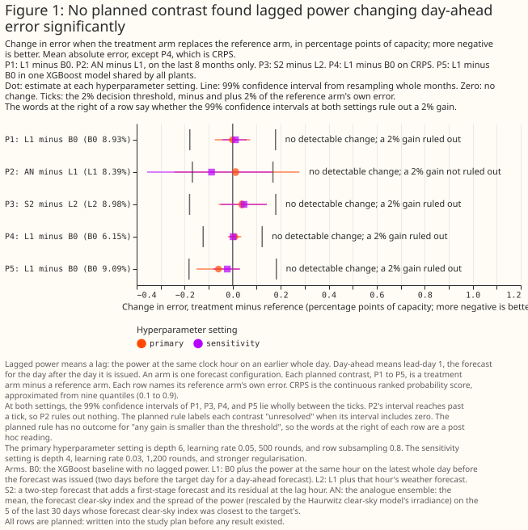
Terms used on this page.
- Points: percentage points of a plant's capacity, where capacity is the plant's 99th percentile of metered output and not its nameplate rating. Differences are an input's error minus the baseline's, so a negative difference means a lower error.
- Lag: the plant's power at the same clock hour on the latest whole day before the forecast is issued, which is 2 days (48 hours) before the target hour for a day-ahead forecast.
- Arm: one XGBoost model configuration with its own inputs. The baseline arm, B0, has no lagged power. Two tables in "Data and methods" name the arms.
- Lead-day: days between the weather forecast run and the target day. Day-ahead is lead-day 1.
- Fold: a block of whole months held out from training, so that every month is forecast by an XGBoost model that never trained on that month.
- Screen: the first 10 of the 18 scored months, on which the arm with the lowest error was chosen before any planned comparison was run.
- Planned, exploratory, post hoc: a planned contrast was fixed before any result existed. Every other number is exploratory. A post hoc number was added after the first results were seen and is therefore a hypothesis.
- Interval: the range of changes in error that the data are consistent with, allowing for month-to-month weather and the random fitting seed. An interval that includes zero means no detectable change. The forecast's own 10%–90% range is called the forecast band.
- Oracle: an arm told the true size of a planted power loss. It shows what knowing the loss exactly gains an XGBoost model.
- CRPS: the continuous ranked probability score, an error score for a whole forecast distribution, in the same points as mean absolute error. Lower is better.
Can a same-hour lag improve a day-ahead point forecast? No change was detectable. The lag changed the error by −0.001 points [−0.075, +0.073] at the primary hyperparameter setting and by +0.012 points [−0.043, +0.058] at a second, more regularised setting (planned comparison P1, 99% intervals).
Can the lag improve the probabilistic forecast? No change was detectable: the CRPS changed by +0.009 points [−0.020, +0.036] (P4). The 10%–90% forecast band held 68.9% of hours without the lag and 68.5% with it, against a nominal 80%.
Does the lag help one XGBoost model shared by all plants? No change was detectable: −0.059 points [−0.151, +0.029] (P5).
Do the other lagged inputs help? None of the planned comparisons found a gain. The analogue ensemble, chosen by the screen, was no better than the lag on the other 8 months (+0.012 points [−0.243, +0.278], P2), and a two-step forecast was no better than the lag with its weather forecast (+0.039 points [−0.059, +0.143], P3).
How large a gain can the study rule out? The 2% threshold (0.18 points) is about half of what an oracle gains from knowing a 10% power loss in half the months (0.39 points), so the study can rule out only a large gain, at these 6 plants pooled. The plan's own verdict for all five comparisons is "unresolved" (Results).
Did the study detect a planted power loss, and which inputs could? The lag did not detectably recover a planted power loss. In a post hoc test that cuts every plant's power by 10% in the same 9 months, the lag recovered 0.09 [−0.04, 0.27] of what the oracle recovers, weekly statistics 0.39 [0.21, 0.73], and the ratio of power to satellite irradiance 0.74 [0.57, 1.21] (95% intervals, Figure 8).
Do the level-tracking inputs help in the real data? Mostly not. The satellite ratio and weekly statistics gained 0.23 and 0.17 points over the baseline on the 8 months they were picked on (post hoc, so biased upward). Removing one plant's 3 low-output months from its training cut the two gains to 0.04 and 0.05 points, with intervals that include zero (Figure 11).
Do lags help at the longest leads? Weekly statistics lowered the error by 0.45 points [−0.74, −0.16] at day 14 (exploratory). A 50/50 blend of the baseline with a climatology built only from earlier years lowered it by 1.16 points [−1.50, −0.80] (post hoc), so no lag arm beat that simpler fix (Figure 14).
Can lagged inputs describe each plant to an XGBoost model shared by many plants? Partly (post hoc, intervals over months and not over plants). The plant's ratio of power to forecast irradiance and its daily shape lowered a shared model's error by 0.31 points [−0.49, −0.14], and by 0.32 points [−0.51, −0.14] for a plant left out of training (Figure 16).
What can these data support? These data support the absence of a large gain from the same-hour lag at these 6 plants, and a hypothesis that inputs tracking a plant's recent output mostly repair training months in which the plant's output was low. The data do not support a claim about domestic solar, other regions, more than 18 months, a plant that is partly offline in the scored month, or hundreds of plants.
How this page was made. The research question came from a human. Everything else — the code behind every result, the analysis, the figures, and the text — was written by Claude, Anthropic's AI model (for this page, Claude Sonnet 5.5, Claude Opus 5.5, and Claude Sonnet 5). Several independent Claude reviewers have checked the method, the evidence, and the prose adversarially.
Key findings
- The screen's winner lost most of its gain outside the months it was chosen on. The analogue ensemble beat the baseline by 0.231 points [−0.392, −0.102] in the screen and by 0.046 points [−0.243, +0.169] on the other 8 months. Part of that fall is the winner's curse, and part may be the different months (Figure 9, Figure 10).
- The baseline, given the day of the year, learned one plant's low March 2025 and under-forecast a normal March 2026, and the inputs that see recent output corrected that error. In March 2026 the plant produced as much as the other 5 relative to their output, but in March 2025, December 2024, and April 2026 it produced two thirds to three quarters as much (post hoc, Figure 11).
- At day 14 the baseline XGBoost model, trained on 18 months, scores worse than a climatology built from up to 6 earlier years, and a random-day lag gains too. The baseline scored 15.35 points against 14.18, and a random-day lag lowered the error by 0.07 to 0.12 points depending on the draw (post hoc, Figure 13).
- Too many hours fall outside both ends of the forecast band: 14.0% below the 10% quantile and 17.0% above the 90% quantile, for the baseline and the lag alike (post hoc, Figure 18).
Introduction
Flexpectation needs to know whether a plant's own recent power helps its forecast. A lag could correct for soiling, panel degradation, a failed string, part of a plant offline, and changes in the weather forecast product. In an XGBoost model shared by many plants, a lag could also tell the shared model about each plant, such as the plant's ratio of direct-current to alternating-current capacity, without a physical model of the plant. The question came from issue #1138 (Lag features for solar power forecasting).
Short-term photovoltaic forecasting often uses recently observed power as an input. Bacher et al. (2009) forecast up to 36 hours ahead from 15-minute power observations, and the review by Antonanzas et al. (2016) covers forecast horizons from seconds to weeks. This study asks the narrower question of whether a lag of recently observed power helps an XGBoost model that already has a numerical weather forecast, at one lead (a day ahead) and at utility-scale plants.
The study compares an XGBoost model with no lag (B0) against 17 other arms, each an XGBoost model given a different input or set of inputs, at 6 solar plants of National Grid Electricity Distribution (NGED). The forecast is for the day after the day it is issued (lead-day 1), driven by the mean of the 51-member ensemble forecast from the European Centre for Medium-Range Weather Forecasts (ECMWF), called the ENS mean. The reference forecasts that read no weather forecast score far worse on the same 29,445 rows, one per plant per daylight hour: diurnal persistence (the lag used directly as the forecast) 16.56 points and climatology 14.54, against the baseline's 8.93.
| Input | Source and grid | Lead read | Plant data read | Delay assumed |
|---|---|---|---|---|
| ENS mean of ECMWF's 51 members | ECMWF open data at 0.25° (the forecast system runs at about 9 km), averaged over each plant's H3 cell; 3-hourly steps to 144 hours and 6-hourly beyond, interpolated to hourly as in the matched-lead study | the 00 UTC run, lead-days 0, 1, 2, 3, 5, 7, 10, and 14, treated as available at 09:00 UTC | NGED power up to the issue time (09:00 UTC on the run's day; 00 UTC at lead-day 0) | none for power: the live service reads NGED power from an S3 bucket updated every 6 hours, and a delay of up to 9 hours changes only one arm |
| All-sky global horizontal irradiance from the Copernicus Atmosphere Monitoring Service (CAMS) Radiation Service, retrieved from Meteosat Second Generation imagery (one input, PC) | point time series at each plant: hourly irradiation, stamped at the end of the hour | whole days before the issue day | not applicable | 1 day: at 09:00 UTC the whole previous day is available (the service's latency since February 2026; 2 days before then) |
Data and methods
The rows. The study uses the rows of this project's matched-lead study, which are limited to the months for which that study holds archived ENS-mean forecasts: 35,263 hourly solar rows at 6 plants, all daylight hours, from December 2024 (the first whole month after ECMWF's Cycle 49r1) to September 2026. January 2026 is absent because the matched-lead study drops the month in which the Met Office upgraded its UK variable-resolution weather model (UKV). No ENS data are missing. The power record the lags are read from ends on 2026-07-01, the start of a final test period that this study does not open, and that end drops 5,144 rows. Of the remaining 30,119 rows, the 29,445 that have a lag at lead-day 1 cover 18 calendar months. Every error is divided by its own plant's capacity before any mean or difference. Errors are divided by the effective-capacity table built for the matched-lead study.
The models. Each XGBoost model uses the absolute-error objective, column subsampling off, three fitting seeds, and five folds of whole months. The primary hyperparameter setting is depth 6, learning rate 0.05, 500 rounds, and row subsampling 0.8. The baseline B0 has seven columns: hour of day, day of year, an era code (which of three periods, split at 2025-10 and 2026-02, the row falls in), the sun's elevation and azimuth, and the ENS mean's irradiance and temperature at the same lead. The era code and the folds follow the matched-lead study's cuts. The 2025-10 cut comes from that study's shared fold helper and marks no change in any weather product. The 2026-02 cut follows the UKV upgrade, which does not affect the ENS mean. The study does not cut at the one ENS change inside the record, ECMWF's Cycle 50r1 on 2026-05-12. Reading a test month's power as a lag does not leak the test month's answer into the XGBoost model, because the model is trained to predict the training row's own power, so the study keeps rows near fold boundaries. B0's error is 8.93 points over all 18 months and 9.20 over the screen, and the matched-lead study published 8.771% for the same XGBoost model, which the reproduction check matched exactly.
The arms. Every arm other than B0 adds columns to those seven. Arms with more columns can score slightly differently purely because the XGBoost model has more columns to split on, and the study does not pad narrower arms with copies, because an XGBoost model never uses a copied column. The study measures that effect with random-day lag columns instead (see Figure 7).
| Code | Name | What it adds to B0 |
|---|---|---|
| L1 | the lag | the plant's power at the same hour 2 days before the target hour |
| IM | issue morning | the plant's power on the issue day's morning, up to 09:00 UTC |
| L2 | lag with weather | L1 plus that hour's weather forecast |
| CTX7 | seven daily lags | seven separate daily lags and their weather forecasts |
| W7 | weekly statistics | the minimum, maximum, and mean of the same hour over the last 7 whole days |
| Q30 | 30-day percentiles | the 30-day 90th percentile and median of the same hour |
| CK | clipping ceiling | the plant's running 99.5th percentile and 60-day maximum of power, and the share of clear hours near that ceiling |
| TF | transfer ratio | the 30-day ratio of power to forecast irradiance, and that ratio times the target hour's forecast irradiance |
| AN | analogue ensemble | on the 5 of the last 30 days whose forecast clear-sky index was closest to the target's: the mean and spread of their power, each rescaled by the Haurwitz clear-sky model's irradiance, and their mean forecast clear-sky index |
| PC | satellite ratio | the 7-day ratio of power to CAMS satellite irradiance, and the 30-day ratio of CAMS to forecast irradiance |
| S2, S3 | two-step forecasts | S2: L1 plus first-stage XGBoost forecasts for the target hour and the lag hour, and the first-stage residual at the lag hour. S3: the first-stage mean residual over the last 1, 7, and 30 days |
| RP | relative output | the plant's recent energy relative to the other plants |
| T1 | days since start | days since the record began, which lets trees interpolate a test month's level from the months on both sides |
| KS | combination | L1, IM, W7, Q30, TF, S3, and RP together |
| N1, N2 | random-day controls | one random day 8 to 28 days earlier (N1), or one from months not being scored (N2), in place of the lag |
The first run also fitted the daily shape (DT, two 30-day columns: how far the plant's power curve sits earlier or later in the day than clear-sky irradiance, and the share of energy produced in hours when clear-sky irradiance is low), a plant code (a column identifying the plant), the fingerprint (TF, DT, and CK together). The follow-up runs added PC2 (PC with a 2-day wait for CAMS), CL (B0 plus the climatology as a column), two- and three-column random-day controls (N2-2 and N2-3), B0 and other arms without the day of the year, and blends of B0 or W7 with a climatology. Post-model corrections need no fit: rescalings of B0's forecast by recent error, quantiles of recent residuals added to B0's forecast, and a clamp at the clipping ceiling. Every window except N2's random day is anchored at the issue day, and the build asserts and probes that no window reads data after the issue time. PC's 30-day ratio of CAMS to forecast irradiance contains no power, so part of PC's and TF's gain may correct the weather forecast's bias and not track the plant. The live service does not ingest CAMS, so PC would need a new data feed.
The screen chose the analogue ensemble before any planned comparison was run. The screen scores each arm on the first 10 months and chooses the arm with the lowest error among 11 arms eligible for the choice. Those are the 17 arms other than B0, without L1, L2, S2, N1, and N2 (which the planned comparisons use anyway) and without T1 (which interpolates between months and could not run live).
The five planned comparisons are:
- P1: the lag minus B0, one XGBoost model per plant.
- P2: the screen's chosen arm minus the lag, on the 8 months the screen did not use.
- P3: S2 minus L2.
- P4: the CRPS of the lag minus the CRPS of B0.
- P5: the lag minus B0 in one XGBoost model shared by all plants.
The plan's rule counts a lag as helping if both hyperparameter settings give a 99% interval wholly
below zero and a point estimate of at least 2% of the reference arm's own error. The plan treated 2%
of the reference arm's error as the smallest gain worth acting on. The rule labels a contrast
"unresolved" when the interval includes zero, and has no outcome for "any gain is smaller than the
threshold". The statement that a contrast rules out a gain that large is therefore a post hoc
reading. The plan is the file plans/study-lag-features-1138.md in the repository's git history (on
the study branch, pull
request #1139).
What the significance test covers. Each interval comes from 2,000 resamples, each of which draws whole calendar months, the same months for every arm, and one of the three fitting seeds. The test covers month-to-month weather and the fitting seed, not differences between plants. These 6 plants pooled are therefore the unit, and no interval shows how a seventh plant would fare. With only 8 or 18 months to resample, a percentile bootstrap tends to give intervals that are too narrow, so the follow-up runs also give t-intervals over months. The planned comparisons use 99% intervals (a Bonferroni correction over five) and need both settings to agree. The intervals on the oracle's and the lag's gains over B0 in the planted-loss control are 99% too, and all other intervals on this page, the recovery shares included, are 95%.
Exploratory intervals are not corrected for multiple comparisons, and shared months make them cluster. An exploratory interval for an input with no real effect has a nominal 5% chance of excluding zero. The number of exploratory inputs with no real effect is unknown, and shared months make the false exclusions cluster. Of 83 exploratory intervals in the first run, 14 lay wholly below zero and 20 wholly above. Of 87 exploratory intervals in the first follow-up runs, 27 lay wholly below zero and 7 wholly above. With no real effects, about 2 in 83 would lie wholly on each side, but the arms share columns and months, so the intervals are not independent tests.
Controls. N2, a random day from months not being scored, shows what an extra column does. N1, a random day 8 to 28 days earlier, carries the plant's recent level but little of the recent weather, so N1 shows what a level-only lag does. A positive control plants a power loss, at 5% and at 10% (and at 2% in the first run), by multiplying power by 1 minus the loss in 9 of the 18 scored months and in a random half of the months used only for training. The loss is applied before the lags are built. An oracle arm given the true loss factor shows what knowing the loss exactly gains an XGBoost model. A second control, the plant-steps control, gives each plant its own persistent steps in power, each lasting 4 to 12 weeks. An arm's recovery share is its gain over B0 on the data with the planted loss, minus its gain on the original data, divided by the oracle's gain. The oracle's gain is itself uncertain, so a share's interval is wide and unstable where the oracle's gain is small. The months with the planted loss are also one random draw. The study has not established why the plant-steps control's oracle gains about a quarter as much as the month-level control's oracle at a 10% loss.
Cleaning. Outage, commissioning-ramp, and export-cap hours are dropped from targets and lags. The cleaning rule that drops every hour of a run of 24 or more zero hours looks at later hours. A live service cannot yet know whether a run of zeros will last 24 hours, so a backtest lag inside such a run is cleaner than a live service's lag. The cleaning kept whole months in which one plant produced a fraction of its usual output (see Figure 11). The study therefore cannot say whether a lag helps when a plant is partly offline in the scored month.
Results
Power follows forecast irradiance more closely than it follows the lag
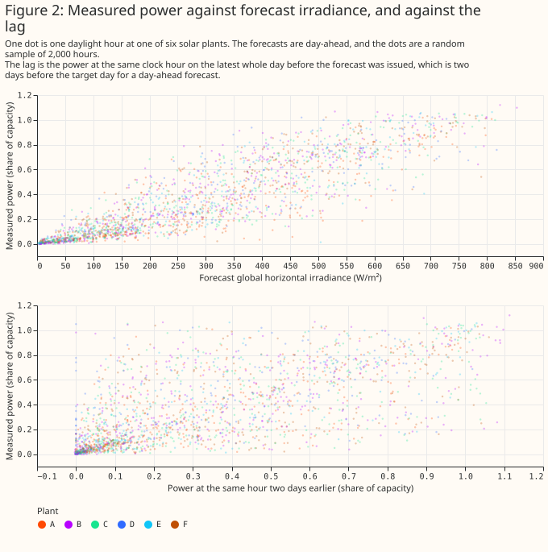
How each lag column is read for one target day
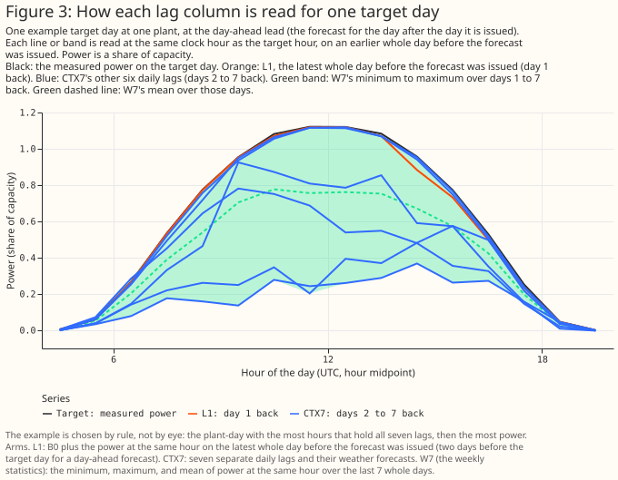
The first-stage forecasts never train on the months they are scored on
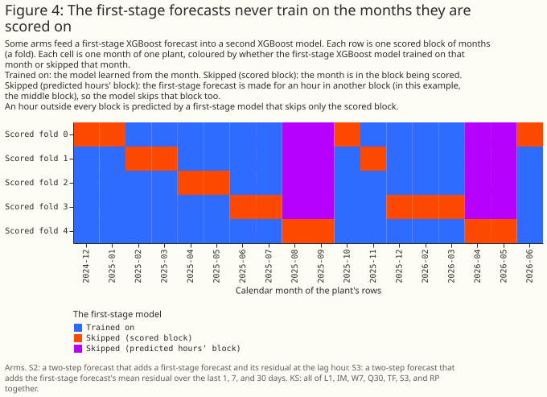
Day-ahead forecasts against measured power in three weeks chosen by rule
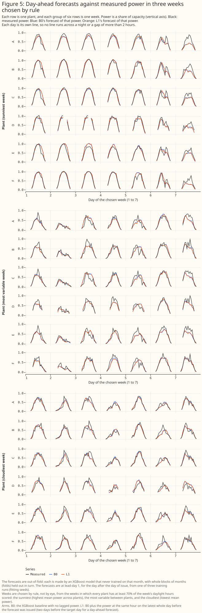
Each arm's error at each plant, and its gain over the baseline there
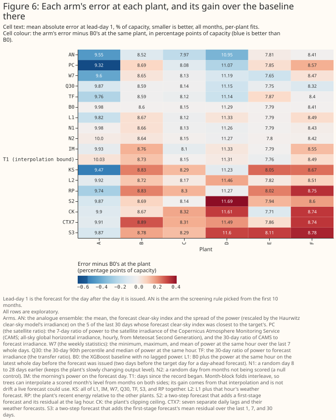
No planned comparison found the lag changing day-ahead error
| Comparison | Reference value, primary setting | 2% threshold, primary setting | Primary setting (99% interval) | Sensitivity setting (99% interval) | Rules out a gain that large |
|---|---|---|---|---|---|
| P1, the lag minus B0 | 8.93 | 0.18 | −0.001 [−0.075, +0.073] | +0.012 [−0.043, +0.058] | yes |
| P2, the chosen arm minus the lag, 8 months | 8.39 | 0.17 | +0.012 [−0.243, +0.278] | −0.088 [−0.356, +0.164] | no |
| P3, S2 minus L2 | 8.98 | 0.18 | +0.039 [−0.059, +0.143] | +0.047 [−0.050, +0.142] | yes |
| P4, the CRPS of the lag minus that of B0 | 6.15 | 0.12 | +0.009 [−0.020, +0.036] | +0.002 [−0.014, +0.015] | yes |
| P5, the lag minus B0, one shared model | 9.09 | 0.18 | −0.059 [−0.151, +0.029] | −0.022 [−0.081, +0.030] | yes |
The plan's verdict is "unresolved" for all five comparisons, and a post hoc reading rules out a gain as large as the 2% threshold for P1, P3, P4, and P5. For those four, the 99% interval lies wholly between minus and plus the threshold at both settings. A t-interval over months gives the same verdict. P5's margin is thin: its lower bound is −0.151 from the bootstrap and −0.171 from the t-interval, against a threshold of −0.182. P2 rests on 8 months and cannot rule out a gain of the threshold's size. The 2% threshold is about half of what an oracle gains from knowing a 10% power loss in half the months, so the study can rule out only a large gain.
A single day's lag neither detects a planted power loss nor beats a random-day lag
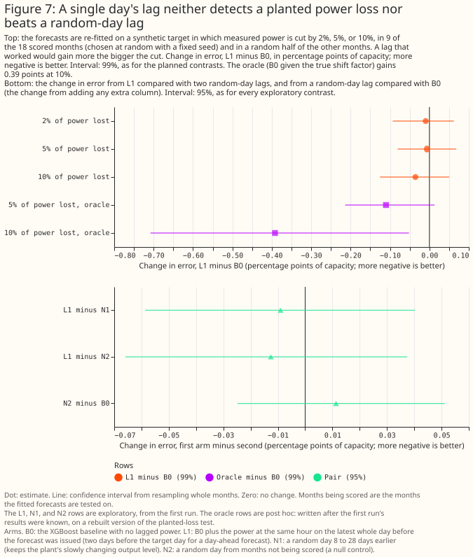
A random-day lag changes the error as much as the real lag does. The shuffled-lag control N2 minus B0 is +0.011 points [−0.025, +0.051], and the lag minus N2 is −0.013 points [−0.066, +0.037] (exploratory). Two extra random-day lags raised B0's error by 0.038 points [−0.005, +0.085], and three by 0.033 [−0.024, +0.092] (post hoc), so extra columns alone may raise the error by up to about 0.04 points, although neither interval excludes zero. The planted-loss control detects no recovery by the lag at 2%, 5%, or 10%: the lag minus B0 is −0.036 points [−0.126, +0.049] at 10% (the first run, exploratory), where the oracle changes the error by −0.392 points [−0.708, −0.052] (post hoc; both intervals 99%).
For a 10% loss at every plant, the satellite ratio recovers 74% of the oracle's gain; one day's lag, 9%
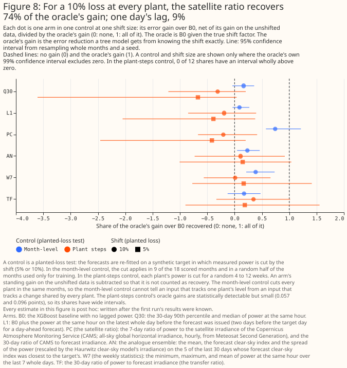
When every plant's power is cut by 10% in the same 9 months, the satellite ratio recovers 0.74 of the oracle's gain and the lag 0.09 (post hoc). The other shares are 0.39 for weekly statistics [0.21, 0.73], 0.23 for the analogue ensemble [0.05, 0.46], 0.16 for the 30-day percentiles [−0.04, 0.36], and 0.17 for the transfer ratio [−0.13, 0.48] (95% intervals). A 5% loss is too small for even the oracle to be statistically detectable (−0.110 points, 99% interval [−0.214, +0.013]), so no share is computed for it. The 2% rule cannot be the pass criterion for a control. The control cuts every plant in the same months, so it cannot tell an input that tracks one plant's level from an input that tracks a change shared by every plant.
The control that cuts each plant separately for 4 to 12 weeks gives the oracle too small a gain to separate the arms. The oracle's gains there are statistically detectable but small (0.057 and 0.096 points at 5% and 10%), so every arm's share interval includes zero, including the satellite ratio's (−0.21 [−0.67, 0.41] at 10%).
The screen picked the analogue ensemble on these months, so its 0.23-point gain is biased upward
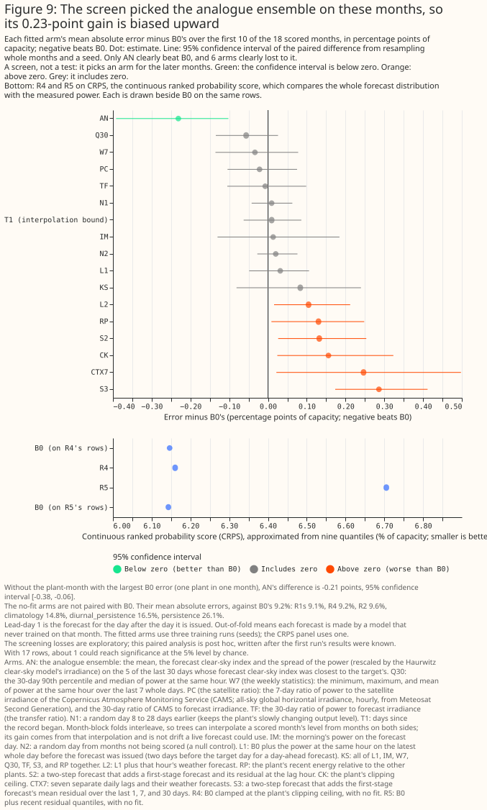
The analogue ensemble had the lowest error in the screen (8.97 points against 9.20 for B0), and beat B0 by 0.231 points [−0.392, −0.102] in the paired comparison. The analogue ensemble was the best of 11 eligible arms, so some of that gain is a winner's curse. Six arms were worse than B0 by a statistically significant amount: L2 by 0.105, RP by 0.130, S2 by 0.132, CK by 0.156, CTX7 by 0.246, and S3 by 0.286 points (post hoc 95% intervals; with 17 paired comparisons, about 1 would reach statistical significance by chance).
On the 8 unselected months, three level-tracking inputs gained most; the analogue ensemble did not
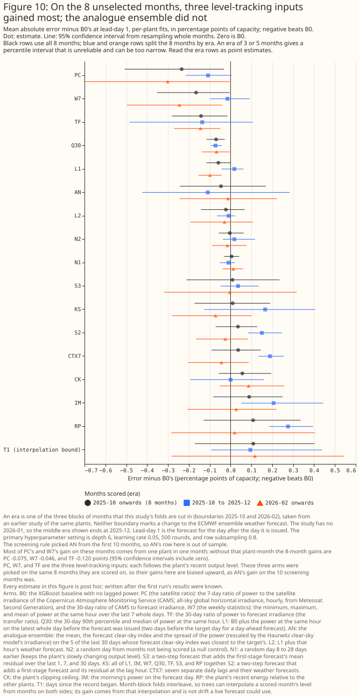
Outside the screen the analogue ensemble's gain over the baseline fell from 0.231 points to 0.046 points [−0.243, +0.169]. The satellite ratio (−0.234 points [−0.507, −0.031]), weekly statistics (−0.165 [−0.353, −0.005]), and transfer ratio (−0.141 [−0.281, −0.015]) gained most on those 8 months. These three arms were picked on the same 8 months they are scored on, so their gains carry the same upward bias as the analogue ensemble's 0.231. The t-intervals over the 8 months include zero for all three arms (for example [−0.486, +0.023] for the satellite ratio). At 99%, the weekly statistics' and transfer ratio's intervals include zero and the satellite ratio's is borderline. The era rows of the figure rest on 3 or 5 months, so their percentile intervals are unreliable and can be too narrow.
Waiting 2 days for CAMS throughout leaves the satellite ratio's 8-month gain unchanged. Three of the 8 months fall before February 2026, when the CAMS latency was 2 days. PC2 gains 0.240 points [−0.554, −0.012] on the same 8 months, against 0.234 for PC (the difference is −0.006 points [−0.062, +0.059]).
A perfect monthly rescale applied in hindsight gains 0.35 to 0.44 points on the 8 months, which is a bound for monthly corrections only. The 0.35 to 0.44 points is the gain from a perfect monthly scale and not a ceiling for finer corrections.
One plant's 3 low-output training months carry most of the satellite ratio's and weekly statistics' gains
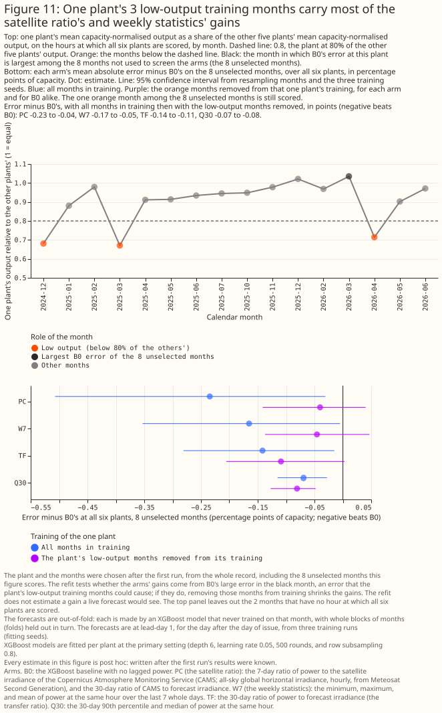
Most of the satellite ratio's and weekly statistics' gain on the 8 months comes from one plant in one month, March 2026, where the baseline under-forecast the plant's output by 14.6 points of capacity on average. That plant produced as much as the other 5 plants relative to their output in that month. In March 2025 the plant produced about two thirds as much (the baseline over-forecast it by 15.6 points), and in December 2024 and April 2026 it produced two thirds to three quarters as much. The cause of the low output is unknown: an outage, curtailment, or a metering or capacity-table fault would each give the same ratio. The cleaning removed none of those months. The baseline is given the day of the year, so it learned the low March and under-forecast a normal March. The inputs that see the plant's recent output corrected that error.
Against a baseline without the day of the year, none of the satellite ratio, weekly statistics, or transfer ratio gained over 18 months. Their errors minus the baseline's were +0.02, +0.04, and +0.06 points (slightly worse), with intervals that include zero. Dropping the day of the year from the baseline lowered its error in that plant-month by 3.96 points, and over all 18 months by 0.117 points [−0.308, +0.063].
Removing the plant's 3 low-output months from its training lowered the baseline's error in that plant-month by 5.17 points and removed most of the satellite ratio's and weekly statistics' gains. The 5.17 varies between 4.74 and 5.81 across fitting seeds. A single month gives no interval over months. The gain of the satellite ratio in that plant-month fell from 6.19 to 0.50 points and of weekly statistics from 4.61 to 0.57. Across all 6 plants the 8-month gains fell from 0.234 to 0.040 points for the satellite ratio (95% interval [−0.141, +0.040]) and from 0.165 to 0.046 for weekly statistics ([−0.137, +0.047]), and the transfer ratio's from 0.141 to 0.109. The 30-day percentiles' gain did not change: −0.081 points [−0.127, −0.048] on the 8 months and −0.062 [−0.109, −0.013] on all 18.
A month counted as low-output when the plant produced less than 80% of the other plants' output, and the same 3 months qualify under both ratios computed. The ratio was computed over the hours at which all 6 plants are scored, and again over the hours at which the plant and at least 2 other plants are scored. No other way of computing the ratio was tried.
The plant and its 3 months were chosen after the first run's results were known, from the whole record including the 8 unselected months on which the gains are scored, so removing the 3 months is an after-the-fact cleaning that a live service could make only once a month had ended. The refit tests whether low-output training months explain the plant-month's error. It does not estimate what a live forecast would gain. A live service would also have trained on the low March a year earlier, so the baseline's error in that plant-month is not only an artefact of cross-validation. Whether a live service would make an error of the same size was not tested.
Against random-day controls of the same width, the satellite ratio, the transfer ratio, the 30-day percentiles, and weekly statistics still gained 0.07 to 0.10 points over 18 months with the dominant plant-month left out of scoring. The satellite ratio minus the 2-column control is −0.078 points [−0.143, −0.009], the transfer ratio −0.085 [−0.166, −0.009], the 30-day percentiles −0.097 [−0.145, −0.057], and weekly statistics minus the 3-column control −0.070 [−0.125, −0.017]. The gain over the baseline is what a service would see. The gain over a random-day control of the same width estimates what an input's information adds once the extra columns are allowed for, from one random draw per width. Both gains are below the 0.18-point threshold. The satellite ratio's and the weekly statistics' gains are also biased towards zero, because the removed plant-month, in which these two inputs gained most, was chosen after the results were known.
Month by month, the paired difference from the baseline at the day-ahead lead
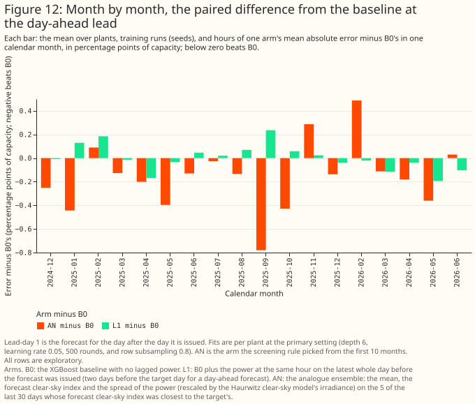
At lead-days 0 and 1, no lag arm beat B0 by more than 0.1 points except the analogue ensemble. The analogue ensemble gained 0.164 points [−0.281, −0.044] at day 1, over 18 months that include the 10 on which it was selected. Four arms (CK, CTX7, RP, and S3) were worse by 0.12 to 0.19 points.
With IFS HRES as the weather input, the single-lag null also holds
With IFS HRES as the weather input, the single-lag null also holds (post hoc). IFS HRES is ECMWF's single high-resolution forecast. Since Cycle 50r1 on 2026-05-12, that single forecast is the ENS control member. The lag minus B0 was +0.014 points [−0.030, +0.053] at lead-day 1 and −0.027 [−0.101, +0.047] at lead-day 2, on the same rows. B0's error was 9.86 with IFS HRES against 8.95 with the ENS mean. That difference is not a ranking of the products, because an ensemble mean is smoother than a single forecast and usually scores lower on absolute error.
At lead-day 14 the baseline is 1.2 points worse than climatology from earlier years, and a random-day lag gains too
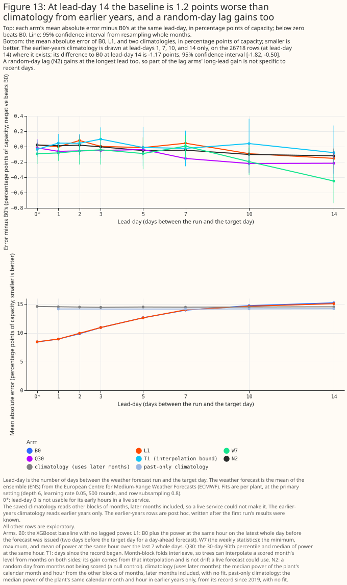
At lead-day 14 the baseline XGBoost model's error (15.35 points) is above that of a climatology built from earlier years (14.18), a difference of −1.17 points [−1.82, −0.50] on the rows where that climatology exists. The comparison is between an XGBoost model trained on 18 months and a median over up to 6 earlier years of the same plant's power. A climatology built from the study's own 18 months was not distinguishable from the baseline at day 14 (−0.73 points [−1.52, +0.17] on the same rows). Most of the gap therefore reflects how much history each forecast has and not the ENS mean alone, and the study does not separate history depth from the ENS mean.
At days 10 and 14, weekly statistics and the 30-day percentiles gain 0.20 to 0.45 points (exploratory). Only weekly statistics were tested against a random-day control of the same width at those leads. The 30-day percentiles were not, so their gain cannot be separated from the effect of extra columns. Weekly statistics gain 0.45 points [−0.74, −0.16] at day 14 on all rows and 0.20 points [−0.37, −0.004] at day 10, and the 30-day percentiles 0.22 points [−0.34, −0.10] at day 10 and 0.22 points [−0.35, −0.07] at day 14. Weekly statistics minus the 3-column control is −0.058 points [−0.173, +0.048] at day 10 and −0.275 [−0.508, −0.048] at day 14. At lead-day 2 the lag raised the error by 0.080 points [+0.015, +0.147] (exploratory, one of many such rows).
Blending the baseline with climatology lowers long-lead error more than any lag arm shown does
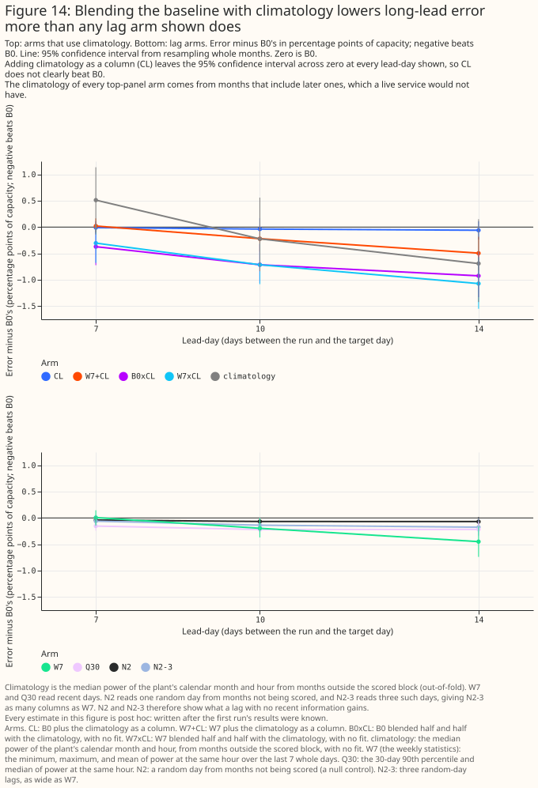
A 50/50 blend of the baseline with a climatology built from earlier years lowers the error by 0.54 points [−0.90, −0.16] at day 7, 0.90 [−1.20, −0.59] at day 10, and 1.16 [−1.50, −0.80] at day 14. A blend of the weekly-statistics arm with it lowers the error by 1.31 points [−1.74, −0.85] at day 14. The earlier-years climatology is the plant's median capacity-normalised power by calendar month and hour. On the same rows at day 14 the blend beats weekly statistics by 0.646 points [−0.939, −0.390], more than weekly statistics beat the baseline (−0.512 [−0.819, −0.208]). The same blends at lead-day 1 raise the error by about 1.6 points. Adding the climatology as one input column gains little (−0.060 points [−0.234, +0.109] at day 14).
The figure's climatology reads months after the target day, which a live service would not have, so its blends are about 0.2 points weaker than the earlier-years blends (0.17 to 0.23). The earlier-years climatology reads up to 6 earlier years from 2019, whereas the figure's climatology reads the 18-month record, so the gap mixes look-ahead with history depth.
Random-day lag controls gain at long leads because they sample the plant's own power from other months, which acts as a weak climatology. N2 refitted on a fixed seeded draw gained 0.069 points [−0.147, +0.018] at day 14, the first run's N2 draw 0.120 points [−0.213, −0.032], and a random-day control as wide as weekly statistics 0.174 points [−0.334, −0.006]. The first run's draw cannot be regenerated, because its build did not fix the draw order.
A shared XGBoost model scored worse than one XGBoost model per plant
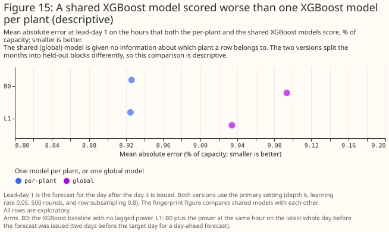
On the same folds, one shared XGBoost model given no input describing the plant scored 0.255 points [+0.078, +0.450] worse than one XGBoost model per plant. Adding a plant code (a column identifying the plant) closed the gap (+0.002 points [−0.113, +0.137]).
Plant information lowers a shared model's error; the clipping ceiling raises it for unseen plants
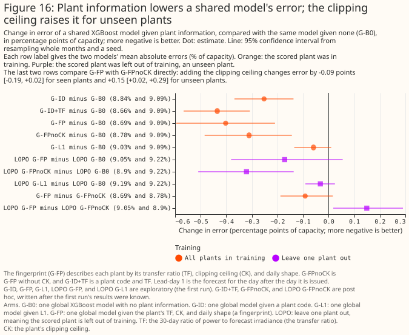
The transfer ratio and the daily shape together lower a shared XGBoost model's error by about as much as a plant code does. Compared with the shared baseline, a plant code lowers the error by 0.252 points [−0.368, −0.137], a plant code with the transfer ratio by 0.435 points [−0.567, −0.308], the transfer ratio and the daily shape together by 0.311 points [−0.485, −0.144], and the fingerprint (the transfer ratio, the daily shape, and the clipping ceiling) by 0.402 points [−0.596, −0.209]. For a plant left out of training the fingerprint gains 0.172 points [−0.381, +0.055] and the version without the ceiling 0.321 points [−0.510, −0.136].
The clipping ceiling acts as a plant code: it barely helps plants seen in training and raises the error for a plant left out. Adding the ceiling changes the error by −0.091 points [−0.188, +0.017] for seen plants and +0.149 points [+0.018, +0.290] for unseen plants. The ceiling is nearly constant within a plant and differs between plants, so in training it acts as a plant code, which cannot transfer to an unseen plant. These intervals resample months, not plants, so with 6 plants they do not show how a seventh plant would fare. Six plants also say nothing about whether a fingerprint scales to hundreds of plants, because the trees have only 5 training plants to interpolate between.
The 10%–90% forecast band holds about 69% of hours rather than 80%, with and without the lag
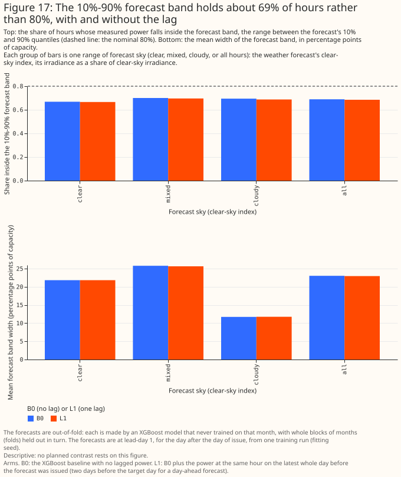
The 10%–90% forecast band held 68.9% of hours without the lag and 68.5% with it, against a nominal 80%.
Both forecast bands are too narrow: too many hours fall below the 10% or above the 90% quantile
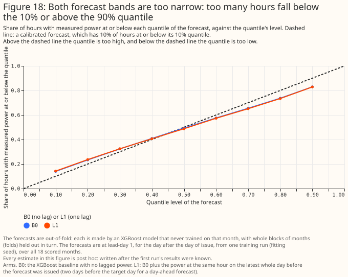
The share of hours below the 10% quantile is 14.0%, and above the 90% quantile 17.0%, for B0, and the lag changes neither.
Building the band from recent residuals made the CRPS 0.562 points [+0.415, +0.693] worse. Adding the quantiles of recent residuals to the baseline's point forecast gave that result.
Where each arm's trees split (descriptive)
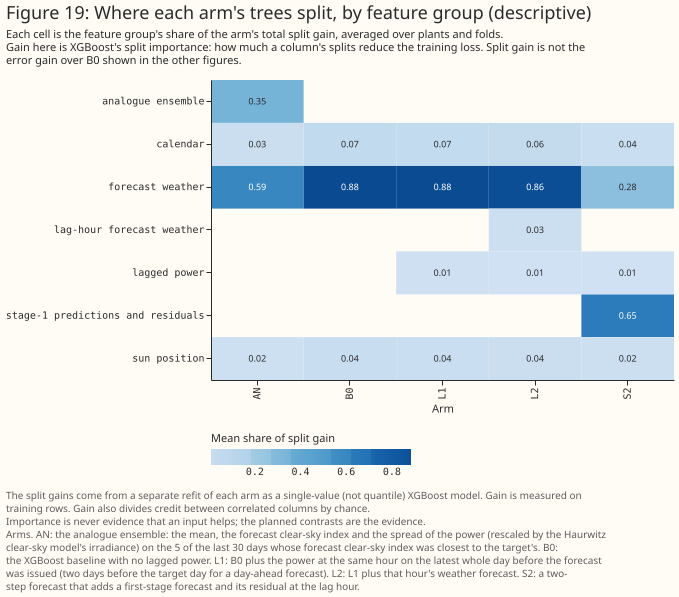
Importance is descriptive, not evidence. The lagged power of the lag arm carries 1.3% of the total split gain [0.8%, 2.5% across refits].
Discussion: what to use
For the day-ahead solar forecast at these 6 utility-scale plants, do not add the same-hour lag. The recommendation would change with more plants, a longer record, or a power feed that is minutes old. The training data kept whole months in which one plant ran at two thirds to three quarters of its usual output, which favours inputs that track a plant's level. Even so, the lag did not help.
A same-hour lag from 2 days earlier is the wrong input for tracking a lasting drop in a plant's output. The study cannot say whether any input helps when a single plant is partly offline in the month being forecast, because the per-plant test was too weak and the data held too few months in which a plant was partly offline.
Remove low-output months from training, in the service and in any further study of lag inputs. A rule that flags a finished month in which a plant produced less than 80% of its neighbours' output needs only metered power, whereas the satellite ratio needs a CAMS feed. The rule can flag a month only once it has ended, and needs other plants nearby.
The 30-day percentiles are the one lagged input worth a planned test. Of the arms tested, they gave the most consistent small gain, about 0.06 points (0.7% of the baseline's error), far below the threshold. The gain did not show in either planted-loss control. With both the baseline and the 30-day percentiles arm stripped of the day of the year, the gain fell to 0.04 points [−0.12, +0.05], so the 30-day percentiles are a hypothesis to test and not a recommendation.
At days 10 to 14, test a blend with a climatology built from earlier years before testing lag inputs. The blend beat every lag arm shown in Figure 14 at those leads and needs no extra data feed. The blend raises the error at day 1, so it belongs only at the longest leads.
For an XGBoost model shared by many plants, test the transfer ratio and daily shape on more plants before relying on them. At these 6 plants they described each plant about as well as a plant code, and still helped a plant left out of training (post hoc).
Recalibrate the 10%–90% forecast band before adding inputs; a lag does not widen it. The study did not test adding the ensemble's spread (see Limitations).
Limitations
- Sample: 18 scored months at 6 plants in one box 25 km across. P2 rests on 8 months (2025-10 to 2026-06, without 2026-01), spanning the matched-lead study's second and third fold eras and with no July to September.
- Day of year with 18 months: the baseline sees each calendar month once or twice, so its day-of-year column can memorise one plant's anomalous month. The post hoc lag gains depend on that memorisation. A baseline without the day of the year scored 0.117 points [−0.308, +0.063] lower over all 18 months.
- Intervals: a percentile bootstrap that resamples 18 one-month clusters tends to give intervals narrower than their stated coverage. Plants are pooled and weighted by row count, and the test does not cover differences between plants. A 99% bound within 0.01 points of zero changes with the bootstrap's random-number stream, so a result whose 99% bound lies that close to zero is called borderline at 99%, neither significant nor not significant.
- Selection: the analogue ensemble was chosen on the screen, and the arms and the plant highlighted in the follow-ups were chosen after seeing the first run, so those results are hypotheses.
- Low-output months: the study has too few months in which a plant is partly offline to say whether a lag helps in the scored month (see Figure 11).
- Controls: the month-level control cannot separate one plant's level from a change shared by every plant, and the plant-steps control is too weak to separate the arms (see Figure 8).
- Weather-product changes: the record holds one ENS change, ECMWF's Cycle 50r1 on 2026-05-12, with about 7 weeks of power after it, so the study does not test whether a lag absorbs a change in the weather forecast product.
- Ensemble spread: every arm is given the ENS mean only, never the ensemble's spread, so the forecast band cannot follow the ensemble's own estimate of each day's uncertainty. The study did not test adding the spread.
- Latency: the study assumes observed power up to the issue time, and CAMS with a 1-day delay. A delay of up to 9 hours in the power feed leaves every whole-day input unchanged, and only the issue-morning arm would lose hours. Before February 2026 the CAMS latency was 2 days, so in the 13 scored months from 2024-12 to 2025-12 the backtest reads CAMS a day fresher than the CAMS service then offered. The version of the satellite ratio that waits 2 days throughout gained the same (a difference of −0.019 points [−0.056, +0.020] over 18 months). The CAMS point service recomputes each request with its current processing, so the backtest reads values fetched after the fact, which may differ from those a live service would have received the next day.
Scope
The study does not cover domestic solar, wind, other regions, a plant that is partly offline in the scored month, a change in the weather forecast product, intraday updates from runs later than 00 UTC, a power feed that is minutes old, histories longer than 18 months, or hundreds of plants.
Data and code availability
The ENS-mean forecasts, CAMS irradiance, and the matched-lead study's rows are inputs the project
holds. NGED's power data are private, and no plant's name, identifier, or coordinates appear on this
page. The scripts are in
studies/lag_features/,
at the commit that merged this page. XGBoost 3.4.1 (from the repository's lock file) fitted every
model on a GPU with 4 workers, at the primary setting (maximum depth 6, learning rate 0.05, 500
rounds, and row subsampling 0.8) and the sensitivity setting (maximum depth 4, learning rate 0.03,
and 1,200 rounds). A refit of one plant's baseline on the GPU reproduced the first run's per-row
losses bit for bit (the plant-control section of the third follow-up round's report, which the study
folder's README describes).
Reproducing the figures
uv run python studies/lag_features/build_lag_frame.py
uv run python studies/lag_features/build_lag_frame.py --weather-product ifs_single
uv run python studies/lag_features/fit_lag_arms.py --reproduction-check --device cuda --max-workers 4
uv run python studies/lag_features/fit_lag_arms.py --device cuda --max-workers 4
uv run python studies/lag_features/report_lag_features.py
uv run python studies/lag_features/followup_frames.py
uv run python studies/lag_features/fit_followups.py --device cuda --max-workers 4
uv run python studies/lag_features/report_followups.py
uv run python studies/lag_features/followup2_frames.py
uv run python studies/lag_features/fit_followups2.py --device cuda --max-workers 4
uv run python studies/lag_features/report_followups2.py
uv run python studies/lag_features/followup3_plan.py
uv run python studies/lag_features/fit_followups3.py --device cuda --max-workers 4
uv run python studies/lag_features/report_followups3.py
uv run python studies/lag_features/lag_features_charts.py --text-only
uv run python studies/lag_features/lag_features_charts.py
uv run python studies/lag_features/lag_features_charts.py --followups --text-only
uv run python studies/lag_features/lag_features_charts.py --followups